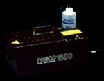

- user -
 |
PlantSafe is a rapid decision-support tool for managing a variety of critical situations including plant emergencies, logistics incidents, security threats, corporate crises and more. PlantSafe may be integrated with other automated systems for direct access to operations and other data as well as delivery of response procedures, documents, drawings and other resources. PlantSafe uses familiar Windows NT conventions for all of its functionality, providing a user-friendly interface for ease of operation and use. PlantSafe offers its decision support benefits to the user through four major views or windows on an unfolding critical situation. Depending on the job function of the user, any or all of the windows may be visible. |
|  |
CUE 2002 is driven by this overarching need to provide the most productive (and profitable) answers in today's changing marketplace. . CUE is the most comprehensive user conference for Lawson services and products. This year's conference provides both leadership and interactive learning opportunities for everyone involved - including Lawson customers, partners and prospects. Vision Lawson Software is committed to solving real-world business problems to give our customers a competitive advantage with the most up-to-date software solutions Lawson offers. |
|
Techniques Use one or more of the following techniques to meet Checkpoint 3. Windows application developers should check the ShowSounds flag by calling the SystemParametersInfo function with the SPI_GETSHOWSOUNDS value, and if set, present visual equivalents of all audio information. Add an option in user preferences, or provide a means for user to turn on visual cues for audio alerts. text, Windows MessageBox) Display a status indicator on the notification area of the taskbar that flashes when initially displayed to attract the user's attention. (Windows Shell_NotifyIcon NIM_MODIFY) Place a text message in a status window. |
Techniques Use one or more of the following techniques to meet Checkpoint 3. Windows application developers should check the ShowSounds flag by calling the SystemParametersInfo function with the SPI_GETSHOWSOUNDS value, and if set, present visual equivalents of all audio information. Add an option in user preferences, or provide a means for user to turn on visual cues for audio alerts. text, Windows MessageBox) Display a status indicator on the notification area of the taskbar that flashes when initially displayed to attract the user's attention. (Windows Shell_NotifyIcon NIM_MODIFY) Place a text message in a status window.
 |
A good user site: http://www.andrew.cmu.edu/user/fwild/